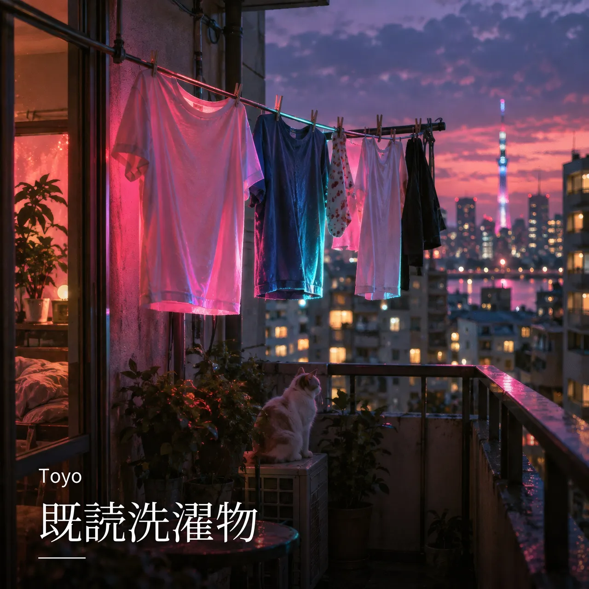

全曲 / 既読洗濯物

NEW
既読洗濯物
Toyo · hyperpop / dance-pop · 朝・はじまり / 気分を上げたい
既読をつけたまま洗濯物をたたむ日も、途中の自分を「これが私」と更新する。
LYRICS
ねえ、今日の私を まだ名前つけないで 既読をつけたまま 洗濯物をたたむ 予定は白紙なのに 通知だけ満員 コンビニのスプーンで プリンのふたをなぞって うまくいかない日にも 小さな丸をつけた 誰かの正解を借りても 袖の長さが合わないから 一歩ぶんだけ はみ出して 笑われたら それも新作 まだ途中がいちばん新しい 間違いだって今日の限定品 転んだ場所から ポーズを決めて 「これが私」と更新中 まだ途中がいちばんまぶしい 完成なんて あとでいい 君の普通と 僕の普通を 混ぜたら知らない色になる ラララ 予定外で行こう ラララ 名前のない方へ 片方だけのイヤホン 知らない曲が流れた 駅前の信号が 青になるまでの秘密 強がりはポケットで くしゃくしゃにしておいて 本音は少しずつでいい 一口ずつ渡そう 誰かの速さに合わせて 息切れする日は止まろう 遅れたんじゃない 選んでる 今日のテンポを選んでる まだ途中がいちばん新しい 不器用だって今日の限定品 泣いた目のまま ピースを決めて 「これが私」と更新中 まだ途中がいちばんまぶしい 完成なんて あとでいい 君の普通と 僕の普通を 混ぜたら知らない色になる もしも明日が同じ顔でも 靴ひもだけは結び直そう 小さな変化を見つけた人から 世界は少し広くなる まだ途中がいちばん新しい 昨日の私も素材になる うまく言えない それでも歌う 「これが私」と更新中 まだ途中がいちばんまぶしい 完成なんて 夢の途中 君の普通と 僕の普通を 混ぜたら知らない色になる ねえ、今日の私を 今日のまま好きになろう ラララ 予定外で行こう ラララ 名前のない方へ
NEXT
次に聴くなら


FOLLOW
新曲を、いちばん早く。
Spotify でフォローすると、新曲が「Release Radar」に自動で届きます。